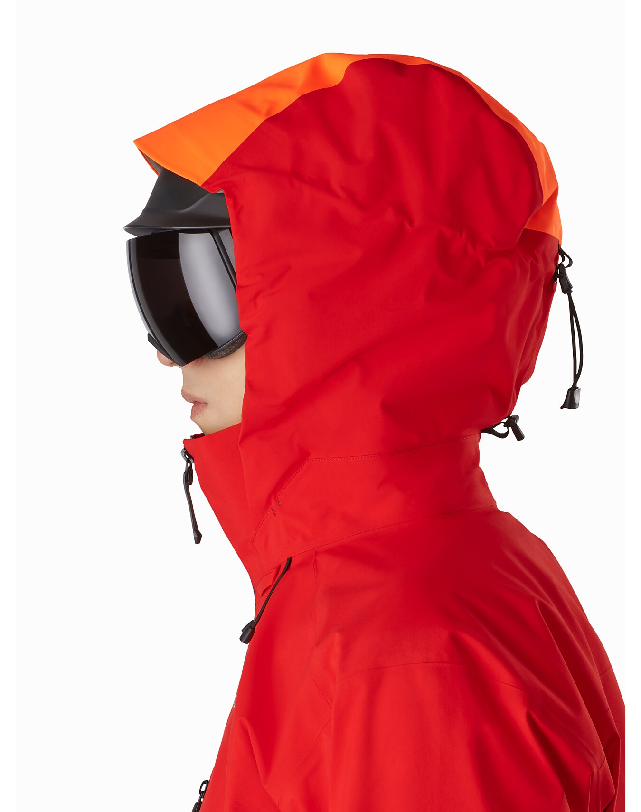
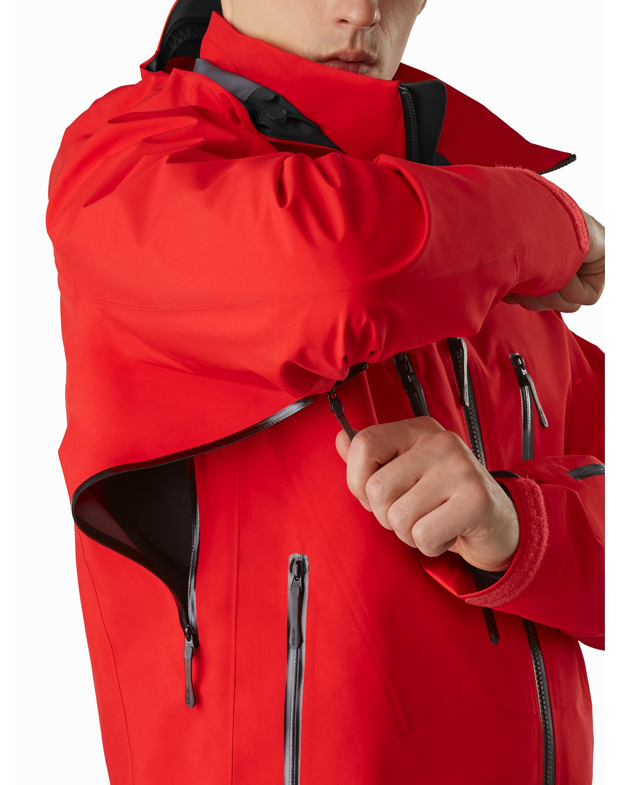
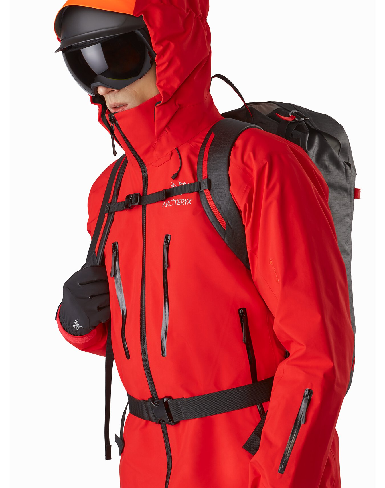
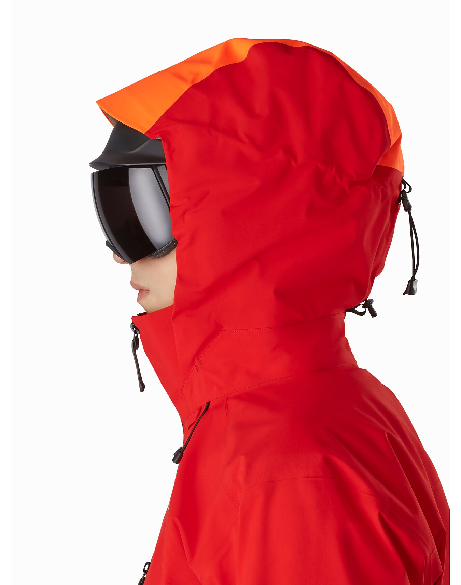
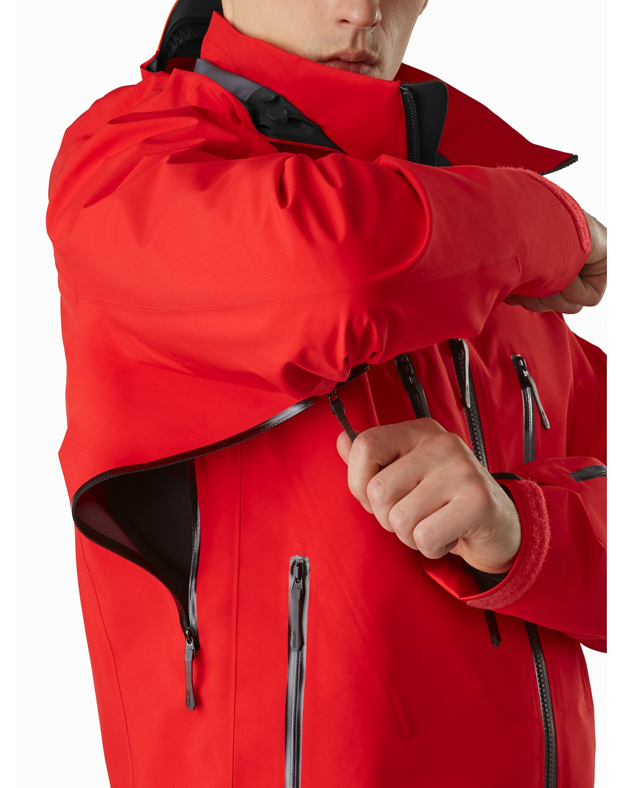
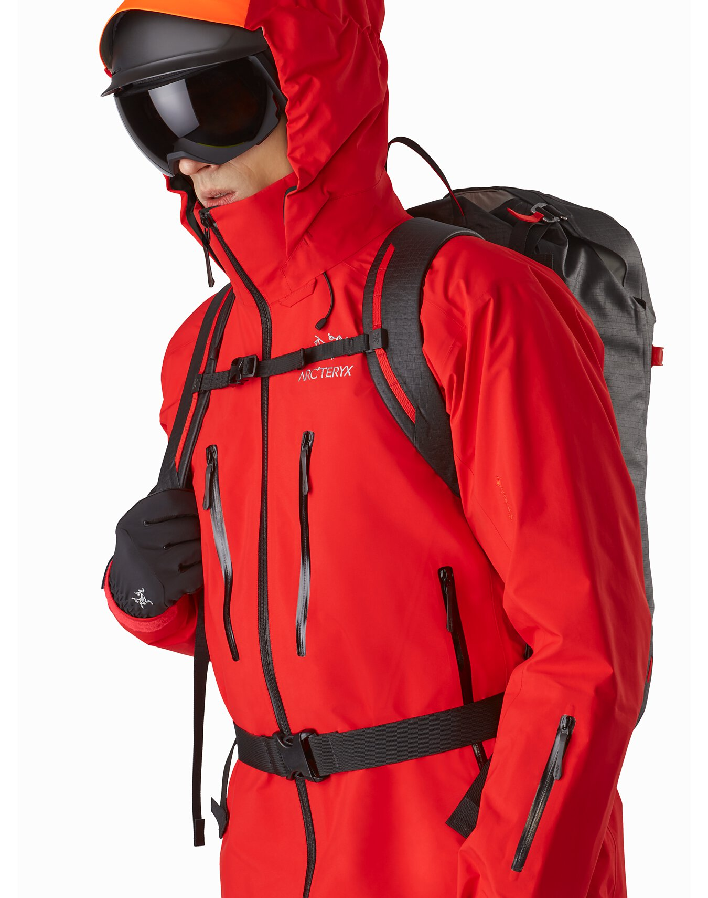

LEAF GEN 2 MALE
ligth,packabele jacket higley versatile GORE-TEX PRO shell whith hybrid construction ALPHA GEN series: all round mountain apperal.
 





PRODUCT FEATURES PATTERNING Military fit allows for layering during cold weather conditions HOOD CONFIGURATION StowHood™ can be stowed in collar when not required ZIPPERS & FLY CONFIGURATION Underarm zip vents enhances ventilation when worn with PPE CUFF & SLEEVES CONFIGURATION Arm cuff Velcro® closures permits secure seal at cuff WAIST & BELT CONFIGURATION Drawcord waist closure vertically routed waist drawcord minimizes interference with duty belt and PPE POCKET CONFIGURATION Internal zip pockets and external chest pocket stores personal items Upper arm zip pockets accessible when wearing load carriage equipment and PPE LOGOS & LABEL CONFIGURATION 4x4.5 Velcro® Upper Arm identification patches with VLite™ retention ring allowing for the application of IFF markings/devices PRINCIPAL MATERIALS & CARE MATERIALS GORE-TEX 3L 40d Nylon Ripstop GORE-TEX 3L 30d Nylon Plain Weave CARE Machine wash in warm water (40°C). Double rinse. Do not use fabric softener. Tumble dry on medium heat. Do not iron.